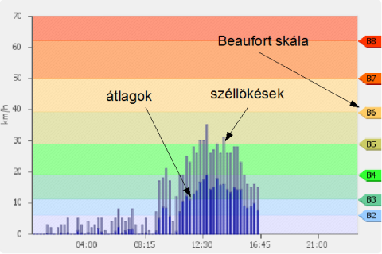

A mérő folyamatosan rögzíti a szélsebességet: percenként eltárolja az abban a percben mért átlagos szélsebességet, valamint az abban a percben mért legnagyobb széllökést. (Ez utóbbit a legmagasabb 5 mp-es mért átlagnak definiáltuk.) Az adatokat mindig km/h-ban tároljuk és adjuk meg. Az egy percnél hosszabb idejű összesítések esetén az egy perces átlagok átlaga adja a középértéket, és az időszakhoz tartozó legnagyobb széllökés adja a maximumot.
A megjelenítés két grafikont tartalmaz: az egyik az elmúlt egy óra részletes adatait jeleníti meg (1 perces átlagok és legnagyobb széllökések), a másik pedig a kiválasztott dátum adatait (15 perces átlagok és legnagyobb széllökések). A napi grafikon alaphelyzetben az aktuális napot mutatja. Meg lehet nézni előző napok adatait is, ehhez dátumot a naptár ikonra () kattintva lehet választani.
 Amennyiben a napi áttekintő képen a "A kiválasztott napra nincs adat" szöveg látható, az azt jelenti, hogy olyan dátumot választott ki, amihez egyáltalán nem tartozik mérési eredmény. Az esetleges műszaki problémát az elmúlt egy órára vonatkozó grafikonon jelezzük: Ezekről az üzemeltetők automatikusan értesülnek, és a lehetőségek szerint igyekeznek a hibát minél hamarabb elhárítani; ehhez kérünk türelmet.
A grafikonokon kívül megjelenítjük az utolsó leolvasás időpontját és a mért adatokat, valamint kicsiben a helyszíni webkamera képét is. Ha a webkamerához a böngésző felhasználónevet és jelszót kér, akkor mindkettőhöz a "vendeg" szót kell megadni (idézőjelek nélkül).
|
A szélmérő a Velencei tó partján álló szálloda épület tetejére, kb. 10 m magasra van telepítve. A mérőfej (nappal :)) látszik a webkamera képén. A mérő tiszta szelet kap a legtöbb irányból (különösen a szeles vízisportok számára Gárdonyban lényeges irányokból), részleges takarásban van keleties (kb. ÉK-DK) irányokból. Ilyen irányú szelek esetén a mért értékek nem pontosak (azonban ilyenkor a víz parthoz közeli részein is bizonytalan a széljárás). |
Nagyobb térkép |
A szélmérő rendszer három részből áll: